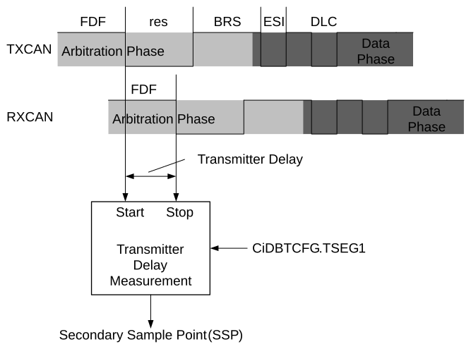

During the data phase of a CAN FD transmission, only one node is transmitting; the others are receiving. Therefore, the propagation delay does not limit the maximum data rate. When transmitting via pin CxTX, the CAN FD Protocol Module receives the transmitted data from its local CAN transceiver via pin CxRX. The received data are delayed by the CAN transceiver’s loop delay. In case this delay is greater than 1 + DTSEG1, a bit error will be detected.
To enable a data phase bit time that is shorter than the transceiver loop delay, the Transmitter Delay Compensation (TDC) is implemented. Instead of sampling after DTSEG1, a Secondary Sample Point (SSP) is calculated and used for sampling during the data phase of a CAN FD message.
Figure 38-5 illustrates how the transceiver loop delay is measured and Equation 1-10 shows how the SSP is calculated.
